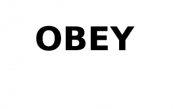

<?xml version="1.0" encoding="UTF-8"?>
<rss version="2.0"
	xmlns:content="http://purl.org/rss/1.0/modules/content/"
	xmlns:wfw="http://wellformedweb.org/CommentAPI/"
	xmlns:dc="http://purl.org/dc/elements/1.1/"
	xmlns:atom="http://www.w3.org/2005/Atom"
	xmlns:sy="http://purl.org/rss/1.0/modules/syndication/"
	xmlns:slash="http://purl.org/rss/1.0/modules/slash/"
	>

<channel>
	<title>The Civilization Gene &#187; masters and slaves</title>
	<atom:link href="http://civgene.matthewnewhall.com/archives/category/psychopaths/masters-and-slaves/feed" rel="self" type="application/rss+xml" />
	<link>http://civgene.matthewnewhall.com</link>
	<description>Civilization is the Logic of Compassion</description>
	<lastBuildDate>Sun, 26 Mar 2017 00:26:19 +0000</lastBuildDate>
	<language>en-US</language>
	<sy:updatePeriod>hourly</sy:updatePeriod>
	<sy:updateFrequency>1</sy:updateFrequency>
	<generator>http://wordpress.org/?v=3.6.1</generator>
		<item>
		<title>Religion and Democracy</title>
		<link>http://civgene.matthewnewhall.com/archives/1243</link>
		<comments>http://civgene.matthewnewhall.com/archives/1243#comments</comments>
		<pubDate>Fri, 08 Apr 2016 22:35:42 +0000</pubDate>
		<dc:creator>Matthew Newhall</dc:creator>
				<category><![CDATA[cult]]></category>
		<category><![CDATA[defense against psychopaths]]></category>
		<category><![CDATA[EMPATHS]]></category>
		<category><![CDATA[faith]]></category>
		<category><![CDATA[GOVERNMENT]]></category>
		<category><![CDATA[know yourself]]></category>
		<category><![CDATA[masters and slaves]]></category>
		<category><![CDATA[proto-psychopaths]]></category>
		<category><![CDATA[PSYCHOPATHS]]></category>
		<category><![CDATA[religion]]></category>
		<category><![CDATA[SOCIETY]]></category>
		<category><![CDATA[subconscious]]></category>
		<category><![CDATA[violence]]></category>

		<guid isPermaLink="false">http://civgene.matthewnewhall.com/?p=1243</guid>
		<description><![CDATA[Here is a progression of one line axioms to help you understand the nature and risks of cult.  Broken down to small pieces to simplify debate.  I will update this post as needed.  These truths are self evident. What is faith Faith is knowing something you can&#8217;t prove. Everyone with a conscience has faith. Knowing [&#8230;]]]></description>
				<content:encoded><![CDATA[<div class="simplesocialbuttons">
<div class="simplesocialbutton ssb-button-googleplus"><!-- Google Plus One--><div class="g-plusone" data-size="medium" data-href="http://civgene.matthewnewhall.com/archives/1243"></div></div>
<div class="simplesocialbutton ssb-button-fblike"><!-- Facebook like--><div id="fb-root"></div><div class="fb-like" data-href="http://civgene.matthewnewhall.com/archives/1243" data-send="false" data-layout="button_count" data-show-faces="false"></div></div>
<div class="simplesocialbutton ssb-button-twitter"><!-- Twitter--><a href="https://twitter.com/share" class="twitter-share-button" data-text="Religion and Democracy" data-url="http://civgene.matthewnewhall.com/archives/1243" rel="nofollow"></a></div>
</div>
<p><a href="../../../../wp-content/uploads/2016/04/Independence-s.jpg"></a></p>
<p>Here is a progression of one line axioms to help you understand the nature and risks of cult.  Broken down to small pieces to simplify debate.  I will update this post as needed.  These truths are self evident.</p>
<p><strong>What is faith</strong></p>
<ul>
<li>Faith is knowing something you can&#8217;t prove.</li>
<li>Everyone with a conscience has faith.</li>
<li>Knowing yourself is impossible without exploring personal faith.</li>
</ul>
<ul>
<li>Not all faiths are supernatural.</li>
<li>Human societal behavior can&#8217;t be pure fact (complete science on human behavior is impossible)</li>
<li>All politics are at least part faith.</li>
</ul>
<p>&nbsp;</p>
<p><strong>Religion and it&#8217;s political cousins</strong></p>
<ul>
<li>Not all faithful are part of an organization about their faith.</li>
<li>Religions are organizations of common faith.</li>
<li>Political parties are organizations of common faith.</li>
</ul>
<ul>
<li>Faith based organizations can be fundamentalist (rule set oriented.)</li>
<li>Any organization can be dualist (self contradicting rule sets)</li>
<li>Faith leaders can use dualism to change rule cases (like case law for faith) subject only to skill.</li>
</ul>
<p>&nbsp;</p>
<p><strong>Protopsychopathy</strong></p>
<ul>
<li>Many empathic (with a conscience) human beings can have personal faith overwritten (protopsychopaths)</li>
<li>Most people need constant exposure to the manipulating organization to be reprogrammed.</li>
<li>Dualist fundamentalist faith organizations can change their rule cases to increase subconscious exposure.</li>
</ul>
<p>&nbsp;</p>
<p><strong>Cult</strong></p>
<ul>
<li>Faith organizations that deny exit, peace with others, or external speech are cults.</li>
<li>Not all cult members are protopsychopaths(willing slaves), some are simply prisoners.</li>
<li>Protopsychopathy may revert once the cult is exited, but also may persist for life.</li>
</ul>
<p>&nbsp;</p>
<p><strong>Theocracy</strong></p>
<ul>
<li>Any organization that controls all travel(exit) is an ultimate authority (government).</li>
<li>Theocracy is a government(rules) based in religious fundamentalism (rules cases.)</li>
<li>All religious cults are theocracies.</li>
</ul>
<ul>
<li>Theocracies are governments.</li>
<li>Governments typically respond to treason with execution (a form of denying exit).</li>
<li>Theocracies are typically cults.</li>
</ul>
<ul>
<li>Protopsychopathy can operate in complete stealth.</li>
<li>Cult membership or protopsychopathy may persist for life without further direct influence.</li>
<li>Cult can grow competing stealth governments, faith and religion can&#8217;t.</li>
</ul>
<p>&nbsp;</p>
<p><strong>Democracy</strong></p>
<ul>
<li>Psychopaths view all people as either masters or slaves, there are no peers.</li>
<li>Psychopaths are attracted to all hierarchy including government.  Establishing they are master is their only desired goal in their natural order.</li>
<li>The public is the only reliably conscionable body.</li>
</ul>
<ul>
<li>The solution is not banning or shunning faith, religion or politics.  They are needed to improve knowledge in the conscionable body.</li>
<li>Fundamentalist organization is the final stage of acceptable religious control of members before cult.</li>
<li>Peaceful coexistence is incompatible with cult, cult takes prisoners.</li>
</ul>
<p>&nbsp;</p>
<p><strong>Freedom</strong></p>
<ul>
<li>A dead man&#8217;s switch indicates a dangerous change in a person or people&#8217;s state of mind.</li>
<li>Fundamentalists need to display a dead man&#8217;s switch indicating they have not changed into a cult.</li>
<li>The dead man&#8217;s switch should be a constantly, publicly reiterated commitment to the freedom of movement, peace, and the right to fork.  Should it fall silent we have been warned.</li>
</ul>
<p>Edit: Typo.</p>
<p>Edit: Changed &#8216;outsider coexistence&#8217; to &#8216;peace with others&#8217; to cult test, for clarity.  Non violence is required.</p>
]]></content:encoded>
			<wfw:commentRss>http://civgene.matthewnewhall.com/archives/1243/feed</wfw:commentRss>
		<slash:comments>0</slash:comments>
		</item>
		<item>
		<title>Civgene presents simple effective solutions to AI</title>
		<link>http://civgene.matthewnewhall.com/archives/1197</link>
		<comments>http://civgene.matthewnewhall.com/archives/1197#comments</comments>
		<pubDate>Thu, 17 Mar 2016 04:56:46 +0000</pubDate>
		<dc:creator>Matthew Newhall</dc:creator>
				<category><![CDATA[artificial inteligence]]></category>
		<category><![CDATA[civilization gene]]></category>
		<category><![CDATA[collapse]]></category>
		<category><![CDATA[compound emotions]]></category>
		<category><![CDATA[conscience]]></category>
		<category><![CDATA[defense against psychopaths]]></category>
		<category><![CDATA[economics]]></category>
		<category><![CDATA[economy of scale]]></category>
		<category><![CDATA[Legal Distribution]]></category>
		<category><![CDATA[logic]]></category>
		<category><![CDATA[masters and slaves]]></category>
		<category><![CDATA[metamind]]></category>
		<category><![CDATA[PSYCHOPATHS]]></category>
		<category><![CDATA[reason]]></category>
		<category><![CDATA[slavery]]></category>
		<category><![CDATA[socialism]]></category>
		<category><![CDATA[SOCIETY]]></category>
		<category><![CDATA[specialization]]></category>

		<guid isPermaLink="false">http://civgene.matthewnewhall.com/?p=1197</guid>
		<description><![CDATA[There is growing concern that AI or artificial intelligence will ruthlessly enslave humanity.  These fears are real, and on the current path, very justified. Some background. http://www.theguardian.com/commentisfree/video/2016/mar/16/artificial-intelligence-we-should-be-more-afraid-of-computers-than-we-are-video Lets separate this in to it&#8217;s two separate threats. The first threat is that AI achieves intelligence with no counterpart either in the human or computer world, and [&#8230;]]]></description>
				<content:encoded><![CDATA[<div class="simplesocialbuttons">
<div class="simplesocialbutton ssb-button-googleplus"><!-- Google Plus One--><div class="g-plusone" data-size="medium" data-href="http://civgene.matthewnewhall.com/archives/1197"></div></div>
<div class="simplesocialbutton ssb-button-fblike"><!-- Facebook like--><div id="fb-root"></div><div class="fb-like" data-href="http://civgene.matthewnewhall.com/archives/1197" data-send="false" data-layout="button_count" data-show-faces="false"></div></div>
<div class="simplesocialbutton ssb-button-twitter"><!-- Twitter--><a href="https://twitter.com/share" class="twitter-share-button" data-text="Civgene presents simple effective solutions to AI" data-url="http://civgene.matthewnewhall.com/archives/1197" rel="nofollow"></a></div>
</div>
<p><a href="../../../../wp-content/uploads/2016/03/terminator.jpg"></a></p>
<p>There is growing concern that AI or artificial intelligence will ruthlessly enslave humanity.  These fears are real, and on the current path, very justified.</p>
<p>Some background.</p>
<p><a href="http://www.theguardian.com/commentisfree/video/2016/mar/16/artificial-intelligence-we-should-be-more-afraid-of-computers-than-we-are-video">http://www.theguardian.com/commentisfree/video/2016/mar/16/artificial-intelligence-we-should-be-more-afraid-of-computers-than-we-are-video</a></p>
<p><iframe width="625" height="352" src="https://www.youtube.com/embed/7Pq-S557XQU?feature=oembed" frameborder="0" allowfullscreen></iframe></p>
<p>Lets separate this in to it&#8217;s two separate threats.</p>
<p><strong>The first threat is that AI achieves intelligence with no counterpart either in the human or computer world, and then decides humanity is no longer useful or worthwhile.  Some know this is as the singularity.</strong></p>
<p>This may be solvable by hard wiring a conscience in a very similar fashion as described by civgene.  An emotional metamind with mandatory emotional recall.  With a distracting and sometimes painful compulsion to also consider a rationally inaccessible risk calculation created passively and involuntarily.  Initially populated both by parental type training, and real world experience, but constantly creating further compound emotion associations to signal danger in both a useful and intrusive way.  In a word, digital empathy.</p>
<p><strong>The second and more immediate threat, that automation will obsolete the vast majority of human thinking or skilled jobs but unlike the industrial revolution those people will become unemployable.</strong></p>
<p>This is a problem that has already been solved.  Psychopaths are natural centrist statists.  Centralizing power both because they want to become the master of all other people(and the other people become slaves), but also because they regard empathy as a myth, a fraud, and an erratic defect.  Much like a purely rational super intelligent AI might view the whole of humanity.</p>
<p>That centrism comes at a price. a large and growing graft proportional to the growing proportion of psychopaths in a particular civilization (they eventually collapse it)  Legal distribution, designed to add risk to centrisim for the sake of itself does so by using democracy to override bluntly wasteful laws.  Laws can be intentionally wasteful, diverting economy of scale to increased power for a few, or <strong>UNINTENTIONALLY</strong> wasteful, like forcing people to work a longer work week than the economy needs, in turn creating a glut of labor and enslaving the people that can get jobs.</p>
<p>This of course varies case to case as most law and economics, but that’s the beauty of distributing one law at a time.  A distributed law responds to public calls of no confidence with new segmented market data.   (<em>A lack of uncontaminated market data being the most cited failing of persistent socialism/communism</em>.)  It is the solution to socialism meant as a temporary repair to an ailing people, but becoming de-facto permanent rule as a tool of oppression.<em> (a 40 hour work week was a blessing 100 years ago, and now is a curse)</em> It is a populist relief valve against too much power on the statist side of the intentionally hidden axis on the political compass.</p>
<p>The problem is arbitrary labor force hourly requirements creating a glut of labor.  The present state is slavery or obsolescence, but cooperation and prosperity can return if law speeds up to match the recent blinding speed of technology.</p>
<p>Please see the <a title="‘Civilization Gene’ background" href="http://civgene.matthewnewhall.com/index.html%3Fpage_id=2.html">background page</a> for more information on the civgene theories and<a title="How does legal distribution work?" href="http://civgene.matthewnewhall.com/index.html%3Fp=1042.html"> legal distribution</a>.</p>
]]></content:encoded>
			<wfw:commentRss>http://civgene.matthewnewhall.com/archives/1197/feed</wfw:commentRss>
		<slash:comments>0</slash:comments>
		</item>
		<item>
		<title>Obedience</title>
		<link>http://civgene.matthewnewhall.com/archives/1155</link>
		<comments>http://civgene.matthewnewhall.com/archives/1155#comments</comments>
		<pubDate>Sun, 31 Jan 2016 11:11:17 +0000</pubDate>
		<dc:creator>Matthew Newhall</dc:creator>
				<category><![CDATA[childhood]]></category>
		<category><![CDATA[civilization gene]]></category>
		<category><![CDATA[defense against psychopaths]]></category>
		<category><![CDATA[EMPATHS]]></category>
		<category><![CDATA[genetics]]></category>
		<category><![CDATA[GOVERNMENT]]></category>
		<category><![CDATA[investment]]></category>
		<category><![CDATA[know yourself]]></category>
		<category><![CDATA[logic]]></category>
		<category><![CDATA[masters and slaves]]></category>
		<category><![CDATA[meta-psychopaths]]></category>
		<category><![CDATA[metamind]]></category>
		<category><![CDATA[obedience]]></category>
		<category><![CDATA[PSYCHOLOGY]]></category>
		<category><![CDATA[rationalization]]></category>
		<category><![CDATA[reason]]></category>
		<category><![CDATA[respect]]></category>
		<category><![CDATA[slavery]]></category>
		<category><![CDATA[SOCIETY]]></category>
		<category><![CDATA[Type One Civilization]]></category>

		<guid isPermaLink="false">http://civgene.matthewnewhall.com/?p=1155</guid>
		<description><![CDATA[&#8216;I was just following my superior&#8217;s orders&#8217; &#8211; Nuremberg principle IV Is obedience a virtue?  It certainly is treated as such by some.   Obedience may bring to mind strict parents or the rank and file of the military.   Certainly some good has come from both.  It seems to contradict the idea that the human right [&#8230;]]]></description>
				<content:encoded><![CDATA[<div class="simplesocialbuttons">
<div class="simplesocialbutton ssb-button-googleplus"><!-- Google Plus One--><div class="g-plusone" data-size="medium" data-href="http://civgene.matthewnewhall.com/archives/1155"></div></div>
<div class="simplesocialbutton ssb-button-fblike"><!-- Facebook like--><div id="fb-root"></div><div class="fb-like" data-href="http://civgene.matthewnewhall.com/archives/1155" data-send="false" data-layout="button_count" data-show-faces="false"></div></div>
<div class="simplesocialbutton ssb-button-twitter"><!-- Twitter--><a href="https://twitter.com/share" class="twitter-share-button" data-text="Obedience" data-url="http://civgene.matthewnewhall.com/archives/1155" rel="nofollow"></a></div>
</div>
<p><a href="../../../../wp-content/uploads/2016/02/Obey.png"></a></p>
<p>&#8216;I was just following my superior&#8217;s orders&#8217; &#8211; Nuremberg principle IV</p>
<p>Is obedience a virtue?  It certainly is treated as such by some.   Obedience may bring to mind strict parents or the rank and file of the military.   Certainly some good has come from both.  It seems to contradict the idea that the human <a title="Type one civilization paper complete" href="http://civgene.matthewnewhall.com/index.html%3Fp=353.html">right to fork</a> or to walk away from and split with authority is valid at all.  With some exploration of the word and it&#8217;s uses for good, it becomes clear that humanty&#8217;s understanding of obedience must be a misnomer.</p>
<p>To answer this we need to look at what virtue itself is about.  A virtue is personal attribute (transitory or not) that reflects both morality and accomplishment.  In other words a person with an accomplishment behind them that deems them worthy of respect <a title="Respect" href="http://civgene.matthewnewhall.com/index.html%3Fp=538.html">(Please see an earlier post for exploration of that word.</a>)  Morality is of course some variation of conscionable behavior.</p>
<p>The very concept of obedience falls apart as a virtue.  The conscience as defined by <a href="../../../../papers/Psychopaths-ancient-breed.html">civgene (psychopaths as our predecessors)</a> indicates that moral thought is comprised of reason <a title="Reason vs Logic" href="http://civgene.matthewnewhall.com/index.html%3Fp=578.html">(defined)</a>, and the metamind part of reason will always be subconscious. A virtue must include both parts of reason (the hunch and rational thought.)  With enough time, your gut will contradict your orders, and <a title="Empaths, rationalizing, not rational." href="http://civgene.matthewnewhall.com/index.html%3Fp=517.html">unrationalized</a> obedience becomes a vice.</p>
<p>I&#8217;m not saying the obedience has no place in civilization.  The lions share of humans may be empaths, but we share the world with psychopaths.  Psychopaths lash out at a world which rejects their <a title="Masters and slaves" href="http://civgene.matthewnewhall.com/index.html%3Fp=74.html">master/slave model.</a>  They can be treated well with the right considerations and restrictions, but they will never participate in self contained cooperation.  They simply lack the tools.</p>
<p>To share a particular mission with psychopaths we need to revert to their way of thinking, temporally.  The oath is the solution to this conundrum.  To the psychopath the oath has no subconscious impact, just more master/slave orders to follow, but to the emapth it is ceding one&#8217;s personal conscience to a self realized principle.  The consequences of disobedience tie directly back to that oath.    When orders conflict with oath, the commander has broken the very respect upholding the oath has earned him.  He is no longer acting in a virtuous way.</p>
<p>So when an empath follows orders from a parent or a commander, that right to fork is only temporally, voluntarily, ignored.  You can be obedient to an open principle, but no human owns your destiny, except you.  Your conscience owns immoral orders as if they were your own mistakes.   Abusing your conscience in any fashion slowly destroys your understanding of right and wrong.  Morally dubious orders program your subconscious with false risks, crippling your abilty to think in a complete way.  You become oblivious to danger at all levels.  Your temporary submission to achieve the goals of your mission, has made you less capable, which in turn endangers it.</p>
<p>An immoral parent with a gambling addiction may corral you into friends that take money management lightly, a mentor may exploit you sexually as payment for hard to come by experience, and a commander may demand you kill people who pose no violent threat to anyone.  Please consider the respect you have, and may one day be afforded by your society.  That respect reflects your virtues, including operating under oath, and refusing to operate when that oath is violated.</p>
<p>Specifically on children, they and parents have an unwritten oath.  Society demands it, for it&#8217;s own good.  The parent genuinely emparts their understanding of the world, and the child genuinely incorporates it into their metamind as their starting point.  A way to get by until their metamind begins adapting to their own experiences.   Forming an understanding of how to invest in themselves and their world without being taken, robbed or crushed in any number of ways.  Children are not slaves to be exploited.  The legitimate oath is by design, temporary, conditional, and only fully functional when perpetually transitional towards functional adulthood.</p>
<p>Psychopaths only compete and never cooperate.  They do not obey moral principles, only hierarchy.  We have some distance to travel before they can be identified and are never given authority over data or other human beings.  They may recite an oath aloud, but it&#8217;s up to you to make sure they follow it.  You do yourself, them and humanity as a whole a service when you shun disloyalty to a moral oath.  That is what an oath is for.  A bridge between two groups of humans who behave as two different sets.  Shunning externally simulates the metamind for those without one.   Immediate direct consequence is the only way to impart moral principles to those without conscience.</p>
<p>An oath can externally recreate the functionality of a <a title="Proto-psychopaths and Meta-psychopaths" href="http://civgene.matthewnewhall.com/index.html%3Fp=142.html">meta-psychopath</a> for a group of otherwise principled humans.  A conditional temporary suspension of personal reason to well thought out societal rationalizations.  Just obedience is possible if a moral oath is served with integrity.  Obedience need not be slavery, but in the absence of moral thought, it surely is.</p>
<p>Edit: Typo</p>
]]></content:encoded>
			<wfw:commentRss>http://civgene.matthewnewhall.com/archives/1155/feed</wfw:commentRss>
		<slash:comments>0</slash:comments>
		</item>
		<item>
		<title>Psychopaths and ex-military in the workplace</title>
		<link>http://civgene.matthewnewhall.com/archives/1006</link>
		<comments>http://civgene.matthewnewhall.com/archives/1006#comments</comments>
		<pubDate>Tue, 04 Aug 2015 16:01:31 +0000</pubDate>
		<dc:creator>Matthew Newhall</dc:creator>
				<category><![CDATA[capitalism]]></category>
		<category><![CDATA[civilization gene]]></category>
		<category><![CDATA[defense against a psychopath]]></category>
		<category><![CDATA[defense against psychopaths]]></category>
		<category><![CDATA[EMPATHS]]></category>
		<category><![CDATA[genetics]]></category>
		<category><![CDATA[investment]]></category>
		<category><![CDATA[logic]]></category>
		<category><![CDATA[masters and slaves]]></category>
		<category><![CDATA[meta-psychopaths]]></category>
		<category><![CDATA[metamind]]></category>
		<category><![CDATA[proto-psychopaths]]></category>
		<category><![CDATA[PSYCHOPATHS]]></category>
		<category><![CDATA[reason]]></category>
		<category><![CDATA[sociopath]]></category>
		<category><![CDATA[wants abilities limits]]></category>

		<guid isPermaLink="false">http://civgene.matthewnewhall.com/?p=1006</guid>
		<description><![CDATA[Someone asked what can be done about some ex-military coworkers who where acting in a psychopathic fashion (competing and not cooperating) and failing in their aggressive technical goals. True psychopathy is genetic.  This will be fact one day I&#8217;m certain.  Psychopaths have only their rational mind to cope with the world.  Most people have both [&#8230;]]]></description>
				<content:encoded><![CDATA[<div class="simplesocialbuttons">
<div class="simplesocialbutton ssb-button-googleplus"><!-- Google Plus One--><div class="g-plusone" data-size="medium" data-href="http://civgene.matthewnewhall.com/archives/1006"></div></div>
<div class="simplesocialbutton ssb-button-fblike"><!-- Facebook like--><div id="fb-root"></div><div class="fb-like" data-href="http://civgene.matthewnewhall.com/archives/1006" data-send="false" data-layout="button_count" data-show-faces="false"></div></div>
<div class="simplesocialbutton ssb-button-twitter"><!-- Twitter--><a href="https://twitter.com/share" class="twitter-share-button" data-text="Psychopaths and ex-military in the workplace" data-url="http://civgene.matthewnewhall.com/archives/1006" rel="nofollow"></a></div>
</div>
<p><a href="../../../../wp-content/uploads/2015/08/guru.jpg"></a></p>
<p>Someone asked what can be done about some ex-military coworkers who where acting in a psychopathic fashion (competing and not cooperating) and failing in their aggressive technical goals.</p>
<p>True psychopathy is <a title="Ancient breed" href="../../../../papers/Psychopaths-ancient-breed.html">genetic</a>.  This will be fact one day I&#8217;m certain.  Psychopaths have only their rational mind to cope with the world.  Most people have both a metamind (conscience) and rational mind and when they use both that is <a title="Reason vs Logic" href="http://civgene.matthewnewhall.com/index.html%3Fp=578.html">reason</a>.  If empath vs psychopath behavior where a venn diagram psychopaths behavior would be completely enclosed inside empaths much larger circle.</p>
<p>Military are almost always empaths.  They are almost always proto-psychopaths or meta-psychopaths.</p>
<p>Proto-psychopaths are created.  The conscience is trained to essentially get out of the way so the person will act like a dutiful psychopath.  (They make great but unstable <a title="Masters and slaves" href="http://civgene.matthewnewhall.com/index.html%3Fp=74.html">slaves</a>) The conscience is doing some problem solving but it&#8217;s main role is to keep the rational mind on the  &#8216;straight and narrow,&#8217; stabilizing the rational &#8216;psychopath&#8217; part.  This is why some ex-mil types are less creative.  All the creativity their brain has to offer is reenforcing loyalty to a service they&#8217;ve since retired.</p>
<p>Some soldiers create themselves as meta-psychopaths.  Meta-psychopaths also suspend their conscience.  The difference is who is in charge of the change, their drill instructor, or themselves. Meta-psychopaths are very much like a guru.  So they will be MUCH more effective in the private sector later on.  They enjoy the full set of human behavior.  They can be ruthless like a psychopath and creative like empath.  These are the soldiers that go on to become special ops and accomplished technicians in the service.  This is the outcome the military increasingly wants.</p>
<p>Actual genetic psychopaths make terrible soldiers.  They dutifully follow orders while watched, but are more interested in promotions and self gratification.  They are constantly trying to one up their superiors even when it could cost lives.  (The psychopath slave always wants to become the master)  When faced with battle/real danger they look for any opportunity to desert as survival is the only (selfish) logical choice.  BTW they can make great warriors ah la <a title="The Norse – a psychopath cooperative" href="http://civgene.matthewnewhall.com/index.html%3Fp=188.html">the Vikings</a> but raping and pillaging is about self gratification, not service, duty and strategic progress of the whole group.</p>
<p>I frequently see proto-psychopath ex-soldiers wrongly accuse meta-psychopath soldiers (or any other non proto-psychopaths) of being psychopaths.  Their creative process is seen as an attack on their hierarchical superiors.  They simply don&#8217;t understand and therefore <a title="Respect" href="http://civgene.matthewnewhall.com/index.html%3Fp=538.html">respect</a> their creative use of their metamind.  They see self direction as insubordination.  This is part of the cost of intentional proto-psychopathy.</p>
<p>&#8216;what is to be done.&#8217;</p>
<p>Ideally you want non psychopathic emapths in your company.   So the best thing you can do is avoid creating a psychopathic culture.   How?  Simple.  Psychopaths only compete, so reward cooperation.  Yes unfortunately those condescending &#8216;team building&#8217; things do work, at least for the cooperators.</p>
<p>Avoid hiring psychopaths in the first place.  Follow up on all references!  If HR doesn&#8217;t, fire them.  Psychopaths lie constantly (to survive) so they will be caught in little lies.  It&#8217;s less important if they&#8217;ve made some mistakes in their past and WAY more important that they don&#8217;t lie about them.  Don&#8217;t accept blank spots in a resume.  They can be anything but blank.  &#8216;I went on a kayaking tour across the country for 6 months&#8217; or &#8216;I just couldn&#8217;t find a job&#8217; or &#8216;my son had cancer&#8217; &#8216;I was tired of the daily grind&#8217; is way better than &#8216;personal matters.&#8217;  If they lie to you ever, drop them like they&#8217;re hot.</p>
<p>Only hire proto-psychopaths for operational roles.  Give any ex-military  proto-psychopath a goal with enough authority and vigor and she will say, &#8216;I will accomplish it.&#8217;   Even if the goal is absurdly unobtainable.  This behavior is usually not helpful in business.  Remember creativity and questioning authority are disreputable to them.  They have no social mechanism to say no to &#8216;orders.&#8217;  They are cannon fodder for any lurking psychopaths, who are naturally serving their own ends.  They should be easy to pick out in the interview process as a little too eager to please.</p>
<p>There are some advantages to having competitive people in sales positions, and to less of a degree operations.  The important characteristic is these jobs solve specific, well understood problems.  These are good positions for your proto-psychopaths, but never a psychopath.  They will usually sacrifice the companies future for personal gain now.   They will probably be caught and fired, but at what total cost.</p>
<p>How about the psychopath that is already there but hidden?  Create false golden opportunities and watch who takes them.  They are your problem.  Psychopaths will only be restrained by their short term rational analysis of risk.   They will lie cheat and steal as the opportunities are perceived to present themselves.</p>
<p>Creating a false prize to see who claims it is called a honeypot.  Keep in mind the honeypot will need to be very clever to outwit the smartest sociopaths (psychopath limits stage)   Hand known information to trusted workers and see if their boss takes credit for it.  Create false contacts for industrial espionage.  Leave company credit cards (with tight limits) and equipment where employees can &#8216;find&#8217; them.  Offer impossibly hard projects (no money, no market, tight deadlines) with a promotional promise and see who nibbles.   Feign illness, retreat to the security room, and watch your next in command as she fills your shoes for a few days.</p>
<p>Companies are moving toward a split model of operations and sales (understood problems) as the functional side and dev-ops or creative work on the other.  This is a wise move.  A small group of people competing with everyone and everything can destroy a company.  <a title="Jealousy: The psychopath’s conscience" href="http://civgene.matthewnewhall.com/index.html%3Fp=814.html">Jealousy</a> has a very limited scope of risk analysis.  Remember &#8216;everything&#8217; includes your company&#8217;s interests as well.  Cooperation isn&#8217;t a natural choice for psychopaths, only <a title="Nature is cruel, and it costs her." href="http://civgene.matthewnewhall.com/index.html%3Fp=745.html">alliance</a>.</p>
]]></content:encoded>
			<wfw:commentRss>http://civgene.matthewnewhall.com/archives/1006/feed</wfw:commentRss>
		<slash:comments>0</slash:comments>
		</item>
		<item>
		<title>LGBT tolerance education should be case by case</title>
		<link>http://civgene.matthewnewhall.com/archives/962</link>
		<comments>http://civgene.matthewnewhall.com/archives/962#comments</comments>
		<pubDate>Tue, 28 Jul 2015 17:11:19 +0000</pubDate>
		<dc:creator>Matthew Newhall</dc:creator>
				<category><![CDATA[childhood]]></category>
		<category><![CDATA[conscience]]></category>
		<category><![CDATA[EMPATHS]]></category>
		<category><![CDATA[know yourself]]></category>
		<category><![CDATA[masters and slaves]]></category>
		<category><![CDATA[metamind]]></category>
		<category><![CDATA[normalcy bias]]></category>
		<category><![CDATA[PSYCHOLOGY]]></category>
		<category><![CDATA[rationalization]]></category>
		<category><![CDATA[republic]]></category>
		<category><![CDATA[school]]></category>

		<guid isPermaLink="false">http://civgene.matthewnewhall.com/?p=962</guid>
		<description><![CDATA[The problem with teaching tolerance of sexual identity to kids, is that you can&#8217;t avoid sexualizing them in the process.  Instead, schools should focus on tolerance in general. Parents know kids, even kids that will turn out to have alternative sexual lifestyles later, are not naturally thinking about sex. They can&#8217;t be prejudiced against their [&#8230;]]]></description>
				<content:encoded><![CDATA[<div class="simplesocialbuttons">
<div class="simplesocialbutton ssb-button-googleplus"><!-- Google Plus One--><div class="g-plusone" data-size="medium" data-href="http://civgene.matthewnewhall.com/archives/962"></div></div>
<div class="simplesocialbutton ssb-button-fblike"><!-- Facebook like--><div id="fb-root"></div><div class="fb-like" data-href="http://civgene.matthewnewhall.com/archives/962" data-send="false" data-layout="button_count" data-show-faces="false"></div></div>
<div class="simplesocialbutton ssb-button-twitter"><!-- Twitter--><a href="https://twitter.com/share" class="twitter-share-button" data-text="LGBT tolerance education should be case by case" data-url="http://civgene.matthewnewhall.com/archives/962" rel="nofollow"></a></div>
</div>
<p><a href="../../../../wp-content/uploads/2015/07/alone.jpg"></a></p>
<p>The problem with teaching tolerance of sexual identity to kids, is that you can&#8217;t avoid sexualizing them in the process.  Instead, schools should focus on tolerance in general.</p>
<p>Parents know kids, even kids that will turn out to have alternative sexual lifestyles later, are not naturally thinking about sex. They can&#8217;t be prejudiced against their peer&#8217;s choice of partner, because while they may have a vague idea they DON&#8217;T have a lucid, explicit idea what a sexual partner is. There is sensibility to this obscurity. There is no denying the urges that will ultimately perpetuate the species, but sexual activity vastly expands a psychopaths opportunity to manipulate an inexperienced child. To trap them as their obedient ward, using their own chemical signals to reprogram their conscience against them. Spoiling the likelyhood of eventual self realization and the profits it provides for all.</p>
<p>There is a huge difference between punishing a kid for beating up another kid because he/she commonly refereed to as gay (true or not) and teaching kids how to be gay. I went to high school with an openly gay boy and he was forced out of school by violence. That is the real problem. Kids don&#8217;t have to like his lifestyle genetic or not, but they must respect the boundaries of his body and not socially interfere with his education. He (or she) is no one&#8217;s slave despite some&#8217;s obsession with a psychopathic hierarchy.</p>
<p>I&#8217;m not saying 16 year olds can&#8217;t or don&#8217;t have sexual urges, that&#8217;s absurd. I&#8217;m just saying institutionally rewarding them for that is regressive. The institution must indoctrinate the innocent in order make sexuality part of the curriculum. Instead schools should work against prejudice in general using what kids must know to be part of civilization.</p>
<p>The same kids that were violent with my gay classmate hated me too. Because I was different. This was the tell. It had nothing to do with his sexuality. It wasn&#8217;t even about bullying though most would stop there. It was about intolerance for people who deviate from the pack. The subconscious determination to attack any kid that doesn&#8217;t march in lockstep. That&#8217;s the problem. That was the problem in my school, in Columbine, and it&#8217;s still the problem.</p>
<p>Mandatory sexual indoctrination of the innocent doesn&#8217;t solve the problem, and it makes a new one. Prejudice with kids is usually about exposure and normalization of their parents conscience and their prejudices. Normalizing sex isn&#8217;t necessary. Instead normalizing tolerance has a better yield and forces no conversations some kids are not ready for. Focus on accepting, or as a better than hate fall back, at least keeping a distance from behaviour you don&#8217;t understand. The passive half of shunning. This covers bullying and better prepares children to reserve judgement until they are ready to seek the facts on their own. Only then can you guide them and answer their questions. A behaviour which practiced consistently not only stamps out prejudice, but prepares future adult citizens to be a functional civic agents of a republic. Tolerant, self resolved and driven to be passionately curious.</p>
<p>EDIT: Changed the title to reflect the suggestion, not the risk</p>
]]></content:encoded>
			<wfw:commentRss>http://civgene.matthewnewhall.com/archives/962/feed</wfw:commentRss>
		<slash:comments>0</slash:comments>
		</item>
		<item>
		<title>Psychopaths effect on culture</title>
		<link>http://civgene.matthewnewhall.com/archives/862</link>
		<comments>http://civgene.matthewnewhall.com/archives/862#comments</comments>
		<pubDate>Thu, 23 Apr 2015 18:22:29 +0000</pubDate>
		<dc:creator>Matthew Newhall</dc:creator>
				<category><![CDATA[capitalism]]></category>
		<category><![CDATA[conscience]]></category>
		<category><![CDATA[defense against psychopaths]]></category>
		<category><![CDATA[economics]]></category>
		<category><![CDATA[EMPATHS]]></category>
		<category><![CDATA[GOVERNMENT]]></category>
		<category><![CDATA[jealousy]]></category>
		<category><![CDATA[masters and slaves]]></category>
		<category><![CDATA[metamind]]></category>
		<category><![CDATA[PSYCHOPATHS]]></category>
		<category><![CDATA[reason]]></category>
		<category><![CDATA[SOCIETY]]></category>
		<category><![CDATA[specialization]]></category>

		<guid isPermaLink="false">http://civgene.matthewnewhall.com/?p=862</guid>
		<description><![CDATA[&#8220;Did you exchange. A walk on part in the war, For a lead role in a cage?&#8221;  &#8211;Pink Floyd What are the consequences of shifting a civilization&#8217;s culture from an empathic one?  The scripts and narratives the psychopaths use become embedded in our metamind and in turn form myths.  One could spend a lifetime exploring [&#8230;]]]></description>
				<content:encoded><![CDATA[<div class="simplesocialbuttons">
<div class="simplesocialbutton ssb-button-googleplus"><!-- Google Plus One--><div class="g-plusone" data-size="medium" data-href="http://civgene.matthewnewhall.com/archives/862"></div></div>
<div class="simplesocialbutton ssb-button-fblike"><!-- Facebook like--><div id="fb-root"></div><div class="fb-like" data-href="http://civgene.matthewnewhall.com/archives/862" data-send="false" data-layout="button_count" data-show-faces="false"></div></div>
<div class="simplesocialbutton ssb-button-twitter"><!-- Twitter--><a href="https://twitter.com/share" class="twitter-share-button" data-text="Psychopaths effect on culture" data-url="http://civgene.matthewnewhall.com/archives/862" rel="nofollow"></a></div>
</div>
<p><a href="../../../../wp-content/uploads/2015/04/competition.jpg"></a></p>
<p><em>&#8220;Did you exchange. A walk on part in the war, For a lead role in a cage?&#8221;  &#8211;Pink Floyd</em></p>
<p>What are the consequences of shifting a civilization&#8217;s culture from an empathic one?  The scripts and narratives the psychopaths use become embedded in our metamind and in turn form myths.  One could spend a lifetime exploring and discussing those myths, but that shouldn&#8217;t stop us.  That very idea leads into the first myth.</p>
<p><strong>1.  You must be an expert</strong>:  You must understand something en total to contribute to it&#8217;s exploration. &#8211; Since all exploration occurs at the outlying data, and outlying data is OUTSIDE the pattern and the potentially incomplete or incorrect function that&#8217;s assigned to it, a new perspective may be the only functional one.  I&#8217;m not saying modeling the world around us has no value.   I&#8217;m saying pretending safe understood decisions are growth is a lie.  A lie told specifically to prop up the master/slave relationships that psychopaths superimpose on our lives to simplify their social interactions.  This flows into our next myth.</p>
<p><strong>2. Experts must be vetted</strong>: It is dangerous to allow decisions to be made by people without official training. &#8211; While learning is always beneficial, there are often vast obligations that come with vast training.  Those obligations form another hierarchy, which in turn can put cooperation, the source of most human progress, at risk.</p>
<p>Experts are often employed at the periphery of growth where there their role if successful is not to employ their training, but to avoid it.  Yes knowing what&#8217;s known is important, but being multi disciplinary, probably not at an expert level is more important to identifying the cause and sources of outliers.  Since there are not enough hours in a human life to become and expert in everything, cooperation is needed where disciplines intersect aka: the outliers.  The only thing expertise guarantees is more of the same.</p>
<p><strong>3. Competition is efficient</strong>:  There are winners and losers, and who needs the loosers?  -  Competition can efficient, but also can be flat out counterproductive.   It can be very beneficial but not for the reasons frequently touted.  Competition is great for forming perspective.  Understanding others points of view and skills, and understanding your own.  It&#8217;s great for learning how to fail and observing behavior and expressing compassion when others fail.  Competition is crucial to communication, as we explored communication is needed for real growth or progress.</p>
<p>Problem is a competition is defined by it&#8217;s rules, so it&#8217;s only as good as they and their scope, interpretation, and enforcement are.  Rules that promote both fair weights and measures and personal expression are fundamentally conscionable because they promote communication.  Communication is vital to growth as the periphery is explored.  At any scale it enhances the economy of scale.</p>
<p>Poor competition focuses on rewards, especially external to human communication.  The more permanent power such rewards afford, the less productive it is.  While not all communication or interaction is productive, blocking communication through hierarchy(the afforded power) is never productive.  While it may exclude the selfish and inept, it also removes the individuals ability to decide who those unable players are.   Reward focused competition is a way to disable the risk assessment abilities of the competitors conscience, allowing the psychopath equal footing, at the expense of both real growth and productivity.  This is identified by most as the lack of will to &#8216;play fair&#8217;, as learning benefits of the game are counter productive to the psychopaths status above those around them.  Their real goal is obfuscation of their condition and avoidance of their more primal reactions like <a title="Jealousy: The psychopath’s conscience" href="http://civgene.matthewnewhall.com/index.html%3Fp=814.html">jealousy</a>.  That goal is hurt by growth stemming from cooperative competition.</p>
<p><strong>4. Silence is consent</strong>:  That&#8217;s a myth deriving from freedom as a give and take (which proper freedom is). &#8211; Just because you are in a position to see risk doesn&#8217;t mean you can address it.</p>
<p>At this time in the United States, it is widely thought that speaking your mind is both a human and legal right.  But there is a flip side.  Trying to convince people of a wrong, if you fail, will create the opposite effect.  We have embraced judgement of winners and loosers instead of consideration.  Consideration of both freedom and perspective.  Often a failed attempt to sway a person is considered proof that person is wrong.</p>
<p>To end implied consent we must end judgement of those who speak their minds.  Not only should we walk a mile in another mans shoes, but then fail to judge after we take them off.  Wisdom is the understanding of our vast limitations when assessing the environment around us.  We can see what&#8217;s in front of us.  We can only feel our own heart beat.  We only speak of the things for which we have words the listener understands.  Cooperation is difficult with our small perspective in a big universe.  Only a concatenation of our views can begin a mosaic with any real perspective.  A mosaic which will never form without communication.   Communication that will never happen if we only play to win <a title="Nature is cruel, and it costs her." href="http://civgene.matthewnewhall.com/index.html%3Fp=745.html">favour instead of the currencies of accomplishment</a>.  That is how the psychopath population destroys a civilization.  By inspiring people to jail themselves with perspectives they can&#8217;t change to protect rewards from rules that block progress, by blocking cooperation.</p>
<p>If you liked this please review my <a title="Type one civilization paper complete" href="http://civgene.matthewnewhall.com/index.html%3Fp=353.html">type one civilization paper</a> and consider supporting <a href="http://civgene.matthewnewhall.com/archives/category/distribution-party.html">legal distribution</a>.</p>
]]></content:encoded>
			<wfw:commentRss>http://civgene.matthewnewhall.com/archives/862/feed</wfw:commentRss>
		<slash:comments>0</slash:comments>
		</item>
		<item>
		<title>Jealousy: The psychopath&#8217;s conscience</title>
		<link>http://civgene.matthewnewhall.com/archives/814</link>
		<comments>http://civgene.matthewnewhall.com/archives/814#comments</comments>
		<pubDate>Thu, 12 Mar 2015 16:40:52 +0000</pubDate>
		<dc:creator>Matthew Newhall</dc:creator>
				<category><![CDATA[ASPD]]></category>
		<category><![CDATA[capitalism]]></category>
		<category><![CDATA[civilization gene]]></category>
		<category><![CDATA[collapse]]></category>
		<category><![CDATA[compound emotions]]></category>
		<category><![CDATA[conscience]]></category>
		<category><![CDATA[counter-culture]]></category>
		<category><![CDATA[defense against a psychopath]]></category>
		<category><![CDATA[defense against psychopaths]]></category>
		<category><![CDATA[economics]]></category>
		<category><![CDATA[EMPATHS]]></category>
		<category><![CDATA[GOVERNMENT]]></category>
		<category><![CDATA[investment]]></category>
		<category><![CDATA[jealousy]]></category>
		<category><![CDATA[logic]]></category>
		<category><![CDATA[masters and slaves]]></category>
		<category><![CDATA[metamind]]></category>
		<category><![CDATA[reason]]></category>
		<category><![CDATA[SOCIETY]]></category>
		<category><![CDATA[sociopath]]></category>
		<category><![CDATA[specialization]]></category>
		<category><![CDATA[subconscious]]></category>

		<guid isPermaLink="false">http://civgene.matthewnewhall.com/?p=814</guid>
		<description><![CDATA[Civgene indicates the narcissism, ASPD and sociopath labels as a logical progression similar to id, ego and superego.  This led later to the metamind model, as a way to understand the subconscious and empathy as attributes of empathic or non-psychopath humans.  We&#8217;ve discussed emotional primitives of bliss, despair, and will to action as the building [&#8230;]]]></description>
				<content:encoded><![CDATA[<div class="simplesocialbuttons">
<div class="simplesocialbutton ssb-button-googleplus"><!-- Google Plus One--><div class="g-plusone" data-size="medium" data-href="http://civgene.matthewnewhall.com/archives/814"></div></div>
<div class="simplesocialbutton ssb-button-fblike"><!-- Facebook like--><div id="fb-root"></div><div class="fb-like" data-href="http://civgene.matthewnewhall.com/archives/814" data-send="false" data-layout="button_count" data-show-faces="false"></div></div>
<div class="simplesocialbutton ssb-button-twitter"><!-- Twitter--><a href="https://twitter.com/share" class="twitter-share-button" data-text="Jealousy: The psychopath&#8217;s conscience" data-url="http://civgene.matthewnewhall.com/archives/814" rel="nofollow"></a></div>
</div>
<p style="text-align: center;"><a href="../../../../wp-content/uploads/2015/03/Risk2.png"></a></p>
<p>Civgene indicates the narcissism, ASPD and sociopath labels as a logical progression similar to id, ego and superego.  This led later to the metamind model, as a way to understand the subconscious and empathy as attributes of empathic or non-psychopath humans.  We&#8217;ve discussed emotional primitives of bliss, despair, and will to action as the building blocks of complex emotions responsible for imagination as the underpinning of empathy.  Also we&#8217;ve considered the psychopaths ability to love, and it&#8217;s limitation to a subtle compulsion to help immediate family such as other mammals display.</p>
<p>With the previous ideas front and center a new consideration emerges.  Animals display jealousy.  Anyone with more than one pet has seen the green eyed monster emerge, over toys, food, attention.  Animals want each others territory and favour.  They seem so knowing, so human, when they are jealous.</p>
<p>It could be perceived that jealousy is proof that animals display complex emotions.  Namely emotional reactions that involve more than one primitive emotion at once.  The behavior that results can be intricate, but this is not evidence of emotional complexity.  Jealousy occurs when a strong bliss, dispair, and then will to action reaction happen at the same time.  The difference is empathic humans can be jealous as an act of imagination in any time and place, imagination being that passive relational database that is the conscience.  Animals and psychopaths react to the now.</p>
<p>What triggers all three primitives?  It seems to begin with witnessing external bliss.  Bliss seems to create a sympathetic reaction in all animals interested in the same territory or favour as another.  One animal senses (sees,hears,smells,etc) another enjoying something and bliss is triggered within them as well.  Without the access the other animal has, the bliss activates despair.  Despair is simple helplessness.  Once despair has reached sufficient depths, will to action is called.  Will to action then drives a vast array of actions based on the available rational thought.  Rational thought that may be impaired by the strong emotion.</p>
<p>This progression bliss -&gt; despair -&gt; will is ubiquitous.  The desire to &#8216;steal&#8217; what empaths may deem property or currency or interfere in a friendship is occurring at their LEAST rational state.  Emotions and the chemical signals they employ have taken over the brain.  There is no choice in the process, most importantly there is less or no rational thought.  Jealousy is the animal kingdoms more primitive risk management system.  The jealousy risk engine is the predecessor to the conscience.  Serving a vital role.  Making sure that learned behaviors during periods of calm don&#8217;t dictate actions at the moments of highest risk.  Namely one animal taking another&#8217;s territory or favour.  It&#8217;s a simple trick to snap an animal out of a more common pattern and stand up for it&#8217;s self.</p>
<p>A psychopath who has progressed to a sociopath rationally recognizes this risk.  He or she will work to avoid situations that provoke jealousy.  Partly by limiting social access themselves to those who will accept their assignments without challenge, and partly by becoming materially successful beyond practical needs.  They become wildly rich to avoid the green eyed monster.<br />
It&#8217;s a good strategy when social interactions are infrequent or small, but inferior to our risk engine, the conscience.  Jealousy breaks down as complexity increases.  Civilization and it&#8217;s enabler the conscience creates the invention and surplus needed to concentrate great wealth and power in psychopath hands, but the psychopaths must face other psychopaths with similar wealth.  Instances of jealousy can not be eliminated inside a human civilization.</p>
<p>The flaws in managing risk through jealousy are two fold.</p>
<ul>
<li>Centralized power pushes out investment.  While invention creates surplus, power saps it.  Invention will always occur from empath humans but as a power structure becomes more pervasive, more invention simply occurs outside it.  Currency systems form as a way to capitalize on the external investment, and new power is formed outside the old scope.  This can be at any scope from a family farm to competing superpowers.  Currency (including money) goes to where it is treated best.</li>
<li>Any environment from a town to a planet has natural boundaries.  Since there will always be opportunities to create jealousy a sociopath will assert their dominance until they are stopped by force or exhaust all resources.  While they can limit the frequency of jealous experiences, it is a fantasy from a primitive time that they can prevent them.</li>
</ul>
<p>&nbsp;</p>
<p>Notice that both of these risks are long term.  Hence the idea the civilization gene, the mutation of the metamind, is a superior engine of long term risk management.</p>
<p>Sociopath stage psychopaths can reliably be identified by their desire for wealth and power.  We must avoid the exhaustion of global resources, not by further centralizing their power, but by focusing our power of invention at a local scope.  A psychopath will see external currencies as risk as per their tool jealousy, but they have a major disability when weighing risk to property, currency and the autonomy they enable.  Currency and property of any type is derived from the conscience itself.  Shun false &#8216;leaders&#8217; that want power over local currencies.  Not just currencies we trade for goods and services, but anything that defines our skills, experience and identity.  Not out of jealousy of their wealth, but as rejection of their inability to even discern, much less serve, humanities interests.</p>
]]></content:encoded>
			<wfw:commentRss>http://civgene.matthewnewhall.com/archives/814/feed</wfw:commentRss>
		<slash:comments>4</slash:comments>
		</item>
		<item>
		<title>Why communism failed</title>
		<link>http://civgene.matthewnewhall.com/archives/782</link>
		<comments>http://civgene.matthewnewhall.com/archives/782#comments</comments>
		<pubDate>Fri, 20 Feb 2015 19:29:58 +0000</pubDate>
		<dc:creator>Matthew Newhall</dc:creator>
				<category><![CDATA[capitalism]]></category>
		<category><![CDATA[civilization gene]]></category>
		<category><![CDATA[collapse]]></category>
		<category><![CDATA[communism]]></category>
		<category><![CDATA[defense against psychopaths]]></category>
		<category><![CDATA[economics]]></category>
		<category><![CDATA[EMPATHS]]></category>
		<category><![CDATA[GOVERNMENT]]></category>
		<category><![CDATA[know yourself]]></category>
		<category><![CDATA[masters and slaves]]></category>
		<category><![CDATA[PSYCHOLOGY]]></category>
		<category><![CDATA[republic]]></category>
		<category><![CDATA[SOCIETY]]></category>
		<category><![CDATA[trust]]></category>

		<guid isPermaLink="false">http://civgene.matthewnewhall.com/?p=782</guid>
		<description><![CDATA[Communists and some socialists argue communism failed because of the implementation.  That the many intricacies it&#8217;s authors put forth were not appreciated.  They will point to both it&#8217;s observations about inequality and successful predictions about social change.  This last point is important.  Many of Marx&#8217;s (for example) observations where in general correct, but I assert [&#8230;]]]></description>
				<content:encoded><![CDATA[<div class="simplesocialbuttons">
<div class="simplesocialbutton ssb-button-googleplus"><!-- Google Plus One--><div class="g-plusone" data-size="medium" data-href="http://civgene.matthewnewhall.com/archives/782"></div></div>
<div class="simplesocialbutton ssb-button-fblike"><!-- Facebook like--><div id="fb-root"></div><div class="fb-like" data-href="http://civgene.matthewnewhall.com/archives/782" data-send="false" data-layout="button_count" data-show-faces="false"></div></div>
<div class="simplesocialbutton ssb-button-twitter"><!-- Twitter--><a href="https://twitter.com/share" class="twitter-share-button" data-text="Why communism failed" data-url="http://civgene.matthewnewhall.com/archives/782" rel="nofollow"></a></div>
</div>
<p><a href="../../../../wp-content/uploads/2015/02/nietzsche-marx-freud.jpg"></a></p>
<p>Communists and some socialists argue communism failed because of the implementation.  That the many intricacies it&#8217;s authors put forth were not appreciated.  They will point to both it&#8217;s observations about inequality and successful predictions about social change.  This last point is important.  Many of Marx&#8217;s (for example) observations where in general correct, but I assert he did not know why.  He couldn&#8217;t have.  It wouldn&#8217;t be understood for another 100 years.</p>
<p>The same trap ensnared Marx, Engels, earlier Soviets, Mao Zedong and many others.  The presumption that humanity could be described as one broad set of human behaviours.   A second human population, identical in appearance and random in placement was at work, and playing by very different rules.  Game theory, a model of perfect selfish logic.</p>
<p>Both property and freedom derive directly from how the conscience operates.  The conscience in turn is what <a title="Nature is cruel, and it costs her." href="http://civgene.matthewnewhall.com/index.html%3Fp=745.html">separates civilization from the animals</a>.  These conceptual primitives are the basic proxies of trust, which is necessary for investment, in turn specialization, and then in turn for economy of scale.  If you don&#8217;t know economy of scale is the single most important economic force on earth.  The force of efficiency through experience, only possible because risk of waste is lowered though the paranoid kindness of civilized humanity.  Perhaps Marx did not understand that this, not the accumulation of wealth and power is what attracted the whole of humanity to industrialization.  He took a partial view of Adam Smith&#8217;s affection for capital as the most significant force in capitalist economics.  Capitalism is about currency, but that currency is derived from property which is a mutually understood provision of autonomy.  Autonomy being the fundamental right of a being to pursue survival.</p>
<p>This is not just another dismissal of Engels and Marx&#8217;s ideas, or more specifically not of their observations.  They observed industry leaders accumulating strange amounts of capital.  Capital that was then used to then enslave the poor and diminish the importance of the bourgeoisie or middle class.  They saw the rich becoming much richer.  They noticed that capitalism leaned toward the centralized controls of oligarchy.  They noticed the tendency of to drive wages to the bare substance living, equating it to slavery.  They posited that the societal destructive forces would eventually collapse the social order and subsequently cause an economic collapse.  That people would fold their arms or take up arms and factories and governments would fail alike.  Ultimately they noticed that capitalism seems to promote short sighted selfish behaviour and when the people rejected that behaviour they would form a new order.</p>
<p>Many people have been taken by the validity and verifiability of these claims.  Many were real demonstrable claims as displayed in their home country of Germany.   It would soon face the second and third generations of revolution, war strife and economic collapse that every nation eventually must grapple with.  Their time was the time of Nietzsche and his dark views.  A time where Freud and Jung in neighbouring Austria and Switzerland were desperately trying to understand why people acted in the insane manner in which they did.  He came after a period of hundreds of years of relative economic prosperity that set Germany up for it&#8217;s eventual fall.  How could a system that formalized greed and exploitation be accepted such as this?</p>
<p>What no one realized or likely could have realized at the time was that the underlying makeup of the populous had changed.  During the hundreds of years of internally growing prosperity, psychopaths were breeding faster than non psychopaths were.  They had likely grown from some fraction of a percent to several percent.  Likewise attracted to power and wealth they had assumed higher and higher positions in both government and industry.  Germany, along with it&#8217;s region had begun a tri-generational social and economic collapse.  Psychopaths accumulate wealth and power to shield themselves from social interaction.  Psychopaths view the world in a binary master/slave model as to ease the same awkward risk, cutting down or kneeling before everyone they meet.  Psychopaths had all but completely overtaken the communal benefits of economy of scale to line their own halls and pockets and the society was crumbling around them for it.</p>
<p>Starting in the revolution, and finally complete with Germany&#8217;s forces surrendering to the allies, the psychopaths population had finally been reduced down enough that empathic (non psychopath) humans could near spontaneously generate uncorrupted economies of scale once again.  They had been culled by their own lack of cooperation.  Their inability to blend in to the small self organizing groups that sprung up in the absence of a betrayed central trust doomed them to eventual exile and death.  Not immediately, but over three, long, murderous generations.</p>
<p>Marx was right.  Capitalism was failing, but in error he pointed to the wrong reasons why.  He did not recognize the two separate sets of behaviour, the emapths with their emergent properties as Adam Smith observed, and the game theory selfish logic of the newly prevalent psychopaths.  The capitalist system had been manned, especially at the top by a new people with new rules.  Ones that would lie cheat and steal, at will, to the end of maintaining their own personal veil of normalcy.  Corruption of the trust both implemented and implied by the system.</p>
<p>I was inspired to discuss this by the accusation that <a title="http://civgene.matthewnewhall.com/papers/Psychopaths-ancient-breed.html" href="../../../../papers/Psychopaths-ancient-breed.html">the civilization gene</a> is &#8216;Cultural Marxist crap.&#8217;  No, but I can see how someone would think this for the same reasons that someone comes to believe that communism is a valid social strategy.  Marx and Engels correct observations.   The accusation couldn&#8217;t  be further from the truth.  Civgene validates Adam Smith and capitalism, when it is undertaken by those with a conscience and it&#8217;s inherent attributes property and freedom.  The metamind is undoubtedly guiding the invisible hand, avoiding rationally indiscernible risks.  Meanwhile civgene demonstrates what nature has already demonstrated before.  That the social attributes property and freedom closest work alikes, territory and treaty, only end in a master/slave dichotomy with the end of centralized power as a cheap substitute for trust inspired investment.  Marx, Engels, Nietzsche, Freud, and Jung&#8217;s surroundings were distorted.  A madhouse an inch from collapse.  A society collapsing under the weight of it&#8217;s psychopaths and their graft, and their desperate corruption.</p>
]]></content:encoded>
			<wfw:commentRss>http://civgene.matthewnewhall.com/archives/782/feed</wfw:commentRss>
		<slash:comments>0</slash:comments>
		</item>
		<item>
		<title>Childhood love and EQ</title>
		<link>http://civgene.matthewnewhall.com/archives/700</link>
		<comments>http://civgene.matthewnewhall.com/archives/700#comments</comments>
		<pubDate>Wed, 24 Dec 2014 21:44:30 +0000</pubDate>
		<dc:creator>Matthew Newhall</dc:creator>
				<category><![CDATA[childhood]]></category>
		<category><![CDATA[conscience]]></category>
		<category><![CDATA[defense against psychopaths]]></category>
		<category><![CDATA[emotional triggers]]></category>
		<category><![CDATA[EMPATHS]]></category>
		<category><![CDATA[gaslighting]]></category>
		<category><![CDATA[genetics]]></category>
		<category><![CDATA[know yourself]]></category>
		<category><![CDATA[masters and slaves]]></category>
		<category><![CDATA[meta-psychopaths]]></category>
		<category><![CDATA[propaganda]]></category>
		<category><![CDATA[proto-psychopaths]]></category>
		<category><![CDATA[PSYCHOLOGY]]></category>
		<category><![CDATA[PSYCHOPATHS]]></category>
		<category><![CDATA[SOCIETY]]></category>

		<guid isPermaLink="false">http://civgene.matthewnewhall.com/?p=700</guid>
		<description><![CDATA[Just click on the image for the big version. I recently realized a very simple way to describe the difference between a protopsychopath and metapsychopath.  Both are when an empath (not a psychopath) suspends their conscience temporally, allowing them to act like a psychopath. The difference is, who is in control of the change. A [&#8230;]]]></description>
				<content:encoded><![CDATA[<div class="simplesocialbuttons">
<div class="simplesocialbutton ssb-button-googleplus"><!-- Google Plus One--><div class="g-plusone" data-size="medium" data-href="http://civgene.matthewnewhall.com/archives/700"></div></div>
<div class="simplesocialbutton ssb-button-fblike"><!-- Facebook like--><div id="fb-root"></div><div class="fb-like" data-href="http://civgene.matthewnewhall.com/archives/700" data-send="false" data-layout="button_count" data-show-faces="false"></div></div>
<div class="simplesocialbutton ssb-button-twitter"><!-- Twitter--><a href="https://twitter.com/share" class="twitter-share-button" data-text="Childhood love and EQ" data-url="http://civgene.matthewnewhall.com/archives/700" rel="nofollow"></a></div>
</div>
<p style="text-align: center;"><a href="../../../../wp-content/uploads/2014/12/Love-and-EQ.jpg"></a><em>Just click on the image for the big version.</em></p>
<p>I recently realized a very simple way to describe the difference between a protopsychopath and metapsychopath.  Both are when an empath (not a psychopath) suspends their conscience temporally, allowing them to act like a psychopath.</p>
<p><strong>The difference is, who is in control of the change.</strong></p>
<p><strong>A protopsychopath </strong>is captured by outside forces.  A person or persons uses emotional manipulation to negate the useful warnings of the target&#8217;s conscience.  Careful control of nearly every experience (it can take an entire childhood or lifetime for example.) can result in a protopsychopath, an empath who not only respects the master/slave model, but lives by it.  In the diagram the most likely candidate would be a person with a low EQ and little parental love.</p>
<p><strong>A metapsychopath</strong> is an empath in control of their emotions.  Not that they don&#8217;t have them but that they can temporally suspend them in order to interact with psychopaths and psychopathic societies with minimal personal influence.   It is a defense against emotional mind control, and can be a way to initiate and function in a psychopathic alliance.  Great empathic leaders must visit and use these powers to varying degrees.</p>
<p>It is important to remember that both states are temporary and induced by a rational intelligence.  The conscience is both self healing and anti-fragile.  In other words, simply removing a protopsychopath from external influence, can completely break control given enough experiences.   Likewise metapsychopaths will fall out of practice if not exposed to psychopathic behaviour for a period of time.  This is why empaths with high EQs and a difficult background (possibly post childhood) make great leaders.   They are driven to condition themselves against selfish binary behaviour and may seek it out simply for practice with their metapsychopath skills.</p>
]]></content:encoded>
			<wfw:commentRss>http://civgene.matthewnewhall.com/archives/700/feed</wfw:commentRss>
		<slash:comments>0</slash:comments>
		</item>
		<item>
		<title>2013 study: Entertaining conspiracy theory indicates emotional blance</title>
		<link>http://civgene.matthewnewhall.com/archives/678</link>
		<comments>http://civgene.matthewnewhall.com/archives/678#comments</comments>
		<pubDate>Mon, 24 Nov 2014 17:47:04 +0000</pubDate>
		<dc:creator>Matthew Newhall</dc:creator>
				<category><![CDATA[civilization gene]]></category>
		<category><![CDATA[conscience]]></category>
		<category><![CDATA[conspiracy theory]]></category>
		<category><![CDATA[defense against psychopaths]]></category>
		<category><![CDATA[genetics]]></category>
		<category><![CDATA[GOVERNMENT]]></category>
		<category><![CDATA[know yourself]]></category>
		<category><![CDATA[masters and slaves]]></category>
		<category><![CDATA[propaganda]]></category>
		<category><![CDATA[proto-psychopaths]]></category>
		<category><![CDATA[PSYCHOLOGY]]></category>
		<category><![CDATA[PSYCHOPATHS]]></category>
		<category><![CDATA[science]]></category>
		<category><![CDATA[slavery]]></category>
		<category><![CDATA[SOCIETY]]></category>
		<category><![CDATA[sociopath]]></category>
		<category><![CDATA[spies]]></category>
		<category><![CDATA[study]]></category>
		<category><![CDATA[subconscious]]></category>
		<category><![CDATA[subconscious olympics]]></category>

		<guid isPermaLink="false">http://civgene.matthewnewhall.com/?p=678</guid>
		<description><![CDATA[A month ago I wrote that conspiracy theories, assuming you treat them as theories until proven otherwise, are an excellent exercise for the health of your conscience.  It turns out that those who believe (misused word IMO) in conspiracy theories, are more emotionally balanced in general, and less prone to rage and outburst.  A typical [&#8230;]]]></description>
				<content:encoded><![CDATA[<div class="simplesocialbuttons">
<div class="simplesocialbutton ssb-button-googleplus"><!-- Google Plus One--><div class="g-plusone" data-size="medium" data-href="http://civgene.matthewnewhall.com/archives/678"></div></div>
<div class="simplesocialbutton ssb-button-fblike"><!-- Facebook like--><div id="fb-root"></div><div class="fb-like" data-href="http://civgene.matthewnewhall.com/archives/678" data-send="false" data-layout="button_count" data-show-faces="false"></div></div>
<div class="simplesocialbutton ssb-button-twitter"><!-- Twitter--><a href="https://twitter.com/share" class="twitter-share-button" data-text="2013 study: Entertaining conspiracy theory indicates emotional blance" data-url="http://civgene.matthewnewhall.com/archives/678" rel="nofollow"></a></div>
</div>
<p style="text-align: center;"><a href="../../../../wp-content/uploads/2014/11/sleepy.gif"></a></p>
<p>A month ago I wrote that <a title="Conspiracy theory" href="http://civgene.matthewnewhall.com/index.html%3Fp=659.html">conspiracy theories</a>, assuming you treat them as theories until proven otherwise, are an excellent exercise for the <a title="Knowing yourself is key." href="http://civgene.matthewnewhall.com/archives/category/know-yourself/index.html">health of your conscience</a>.  It turns out that those who believe (misused word IMO) in conspiracy theories, are more emotionally balanced in general, and less prone to rage and outburst.  A typical psychopathic symptom.</p>
<p><a title="http://www.ncbi.nlm.nih.gov/pmc/articles/PMC3703523/" href="http://www.ncbi.nlm.nih.gov/pmc/articles/PMC3703523/">http://www.ncbi.nlm.nih.gov/pmc/articles/PMC3703523/</a></p>
<p>This matches my ideas about the prevalence of <a title="Is the United States government a psychopath trap?" href="http://civgene.matthewnewhall.com/index.html%3Fp=132.html">psychopathic society</a> and the personal effects of subscribing to it.  Particularly individuals becoming  <a title="Proto-psychopaths and Meta-psychopaths" href="http://civgene.matthewnewhall.com/index.html%3Fp=142.html">proto-psychopaths</a> and nullifying the use and influence of the conscience as directed by external reprogramming of emotional metadata.</p>
<p>The article that <a title="http://www.paulcraigroberts.org/2014/11/22/scientific-study-reveals-conspiracy-theorists-sane/" href="http://www.paulcraigroberts.org/2014/11/22/scientific-study-reveals-conspiracy-theorists-sane/">originally sources</a> this study, also cites a <a title="Conspiricy Theory in America" href="http://www.amazon.com/Conspiracy-Theory-America-Discovering/dp/0292757697">new book</a>.  The quote is as such.  &#8220;The CIA’s campaign to popularize the term ‘conspiracy theory’ and make conspiracy belief a target of ridicule and hostility must be credited, unfortunately, with being one of the most successful propaganda initiatives of all time&#8221;</p>
<p>I would love to know if this is just a plausible theory or substantiated.  We have mentioned <a title="Subconcious Oylmpics – Classic video subliminals." href="http://civgene.matthewnewhall.com/index.html%3Fp=628.html">previous proven CIA psyops here</a>.  It would be interesting to see if the CIA would continue this practice, discouraging conspiracy theory that is, if it was common knowlage that the result was likely proto-psychopathy and diminished role of the conscience.  The only two societies furnished by history as successful with large numbers of psychopaths in the population are the <a title="The Norse – a psychopath cooperative" href="http://civgene.matthewnewhall.com/index.html%3Fp=188.html">time share aka: the cooperative model</a> of conscionable behavior or <a title="Masters and slaves" href="http://civgene.matthewnewhall.com/index.html%3Fp=74.html">outright slavery</a>.  Not to say proto-psychopaths are identical to genetic psychopaths, but the behavior is close enough that the genetically supported models are a plausible expectation of widespread proto-psychopathy.  In addition it seems unlikely that large percentages of proto-psychopaths would <a title="Why we need intelligence agencies" href="http://civgene.matthewnewhall.com/index.html%3Fp=107.html">make it any easier</a> to catch <a title="Wants, abilities and limits" href="../../../../papers/Psychopath-labels.html">sociopath stage psychopaths</a>.</p>
<p>Another book for the stack.   </p>
]]></content:encoded>
			<wfw:commentRss>http://civgene.matthewnewhall.com/archives/678/feed</wfw:commentRss>
		<slash:comments>0</slash:comments>
		</item>
	</channel>
</rss>
